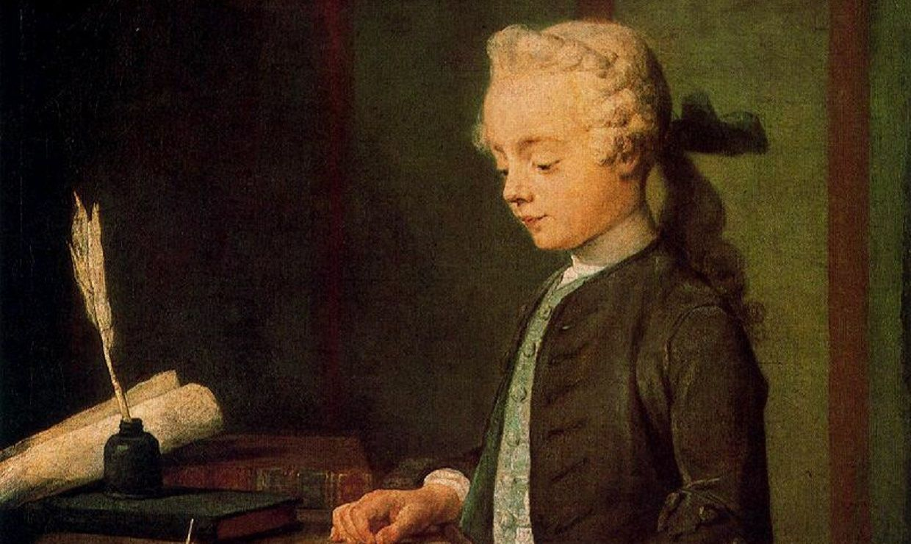
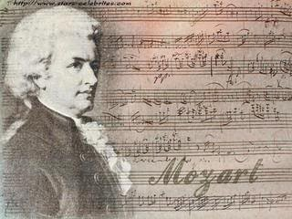
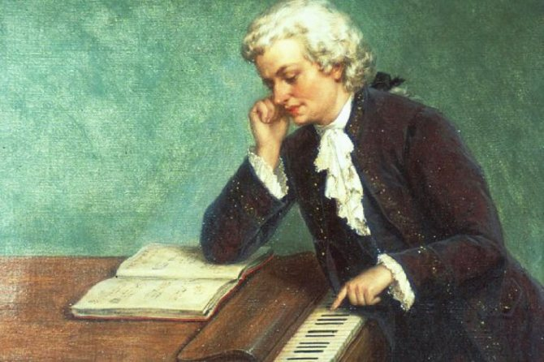
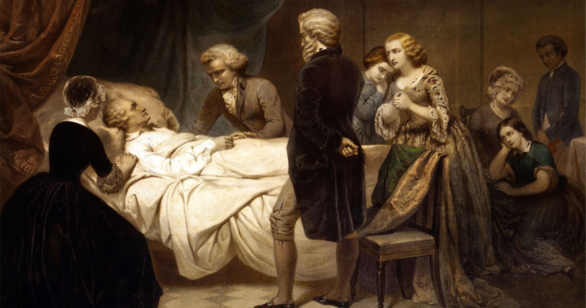

Ранние годы
Моцарт (Иоганн Хризостом Вольфганг Теофил (Готтлиб) Моцарт) родился 27 января 1756 года в городе Зальцбург в музыкальной семье. В биографии Моцарта важно отметить, что музыкальный талант великого композитора был обнаружен еще в раннем детстве. Отец обучал его игре на органе, скрипке, клавесине. В 1762 году семейство едет в Вену, Мюнхен. Там даются концерты Моцарта, его сестры Марии Анны. Затем во время путешествий по городам Германии, Швейцарии, Голландии музыка Моцарта поражает слушателей удивительной красотой. Впервые сочинения композитора издаются в Париже. Следующие несколько лет (1770–1774 гг.) Амадей Моцарт проживал в Италии. Там в первый раз ставятся его оперы («Митридат – царь Понтийский», «Луций Сулла», «Сон Сципиона»), которые получают большой успех публики. Отметим, что к 17 годам широкий репертуар композитора включал более 40 крупных произведений.

Расцвет творчества
С 1775 по 1780 год плодотворная работа Вольфганга Амадея Моцарта пополнила когорту его сочинений рядом выдающихся композиций. После занятия должности придворного органиста в 1779 году симфонии Моцарта, его оперы содержат все больше новых приемов. В краткой биографии Вольфганга Моцарта стоит упомянуть, что женитьба на Констанции Вебер отразилась также на его творчестве. Опера «Похищение из Сераля» пропитана романтикой тех времен. Некоторые оперы Моцарта так и остались неоконченными, поскольку трудное материальное положение семьи заставляло композитора посвящать много времени различным подработкам. В аристократических кругах проводились фортепианные концерты Моцарта, сам музыкант был вынужден писать пьесы, вальсы на заказ, преподавать.

Пик славы
Творчество Моцарта следующих лет поражает плодотворностью наряду с мастерством. Знаменитейшие оперы «Свадьба Фигаро», «Дон-Жуан» (обе оперы написаны совместно с поэтом Лоренцо да Понте) композитора Моцарта ставятся в нескольких городах. В 1789 году им было получено весьма выгодное предложение возглавить придворную капеллу в Берлине. Однако отказ композитора еще более усугубил материальный недостаток. Для Моцарта произведения того времени оказались чрезвычайно успешными. «Волшебная флейта», «Милосердие Тита» – эти оперы были написаны быстро, однако весьма качественно, выразительно, с красивейшими оттенками. Известная месса «Реквием» так и не была закончена Моцартом. Произведение закончил ученик композитора – Зюсмайер.

Смерть
С ноября 1791 года Моцарт много болел и совсем не вставал с кровати. Умер знаменитый композитор 5 декабря 1791 года от острой лихорадки. Похоронили Моцарта на кладбище Святого Марка в Вене.
